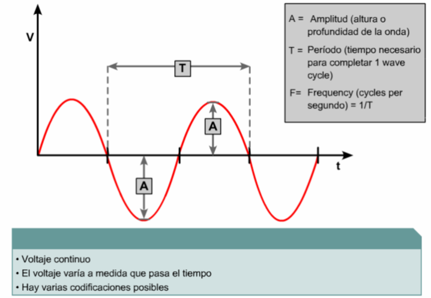

Prueba del cable: Pulsos
Si se genera deliberadamente un disturbio con una duración fija y predecible, éste se llama pulso. Los pulsos son una parte importante de las señales eléctricas porque son la base de la transmisión digital. El patrón de los pulsos representa el valor de los datos que están siendo transmitidos.

-
Ondas sinoidales:Representa a las ondas analógicas
BÚSQUEDAS RELACIONADAS
Ondas senoidales
Decibelios
Ondas rectangulares